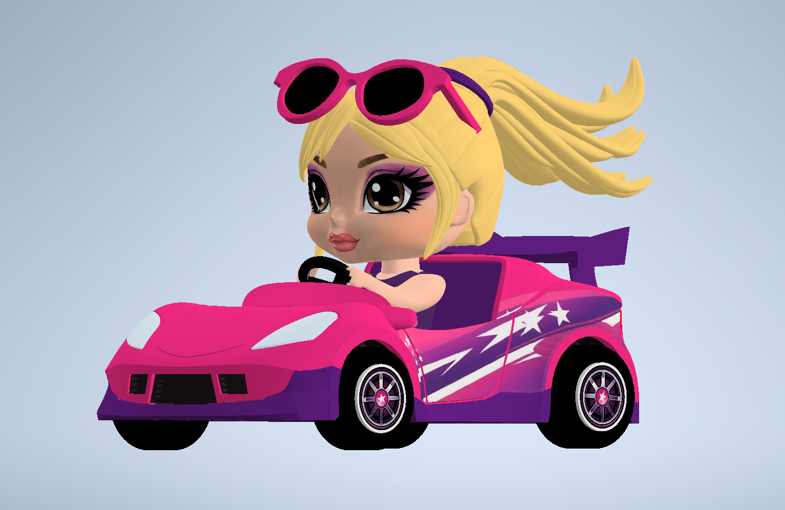
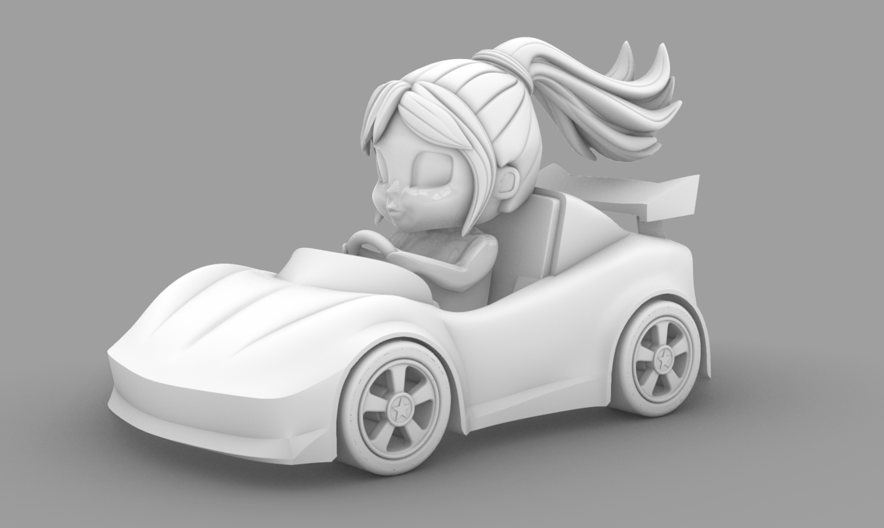
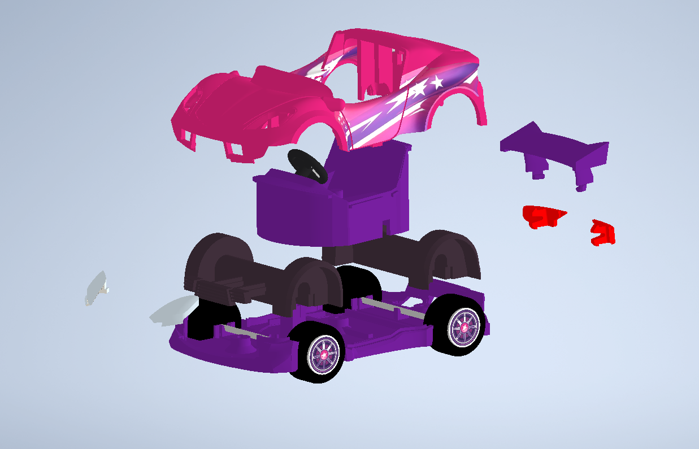
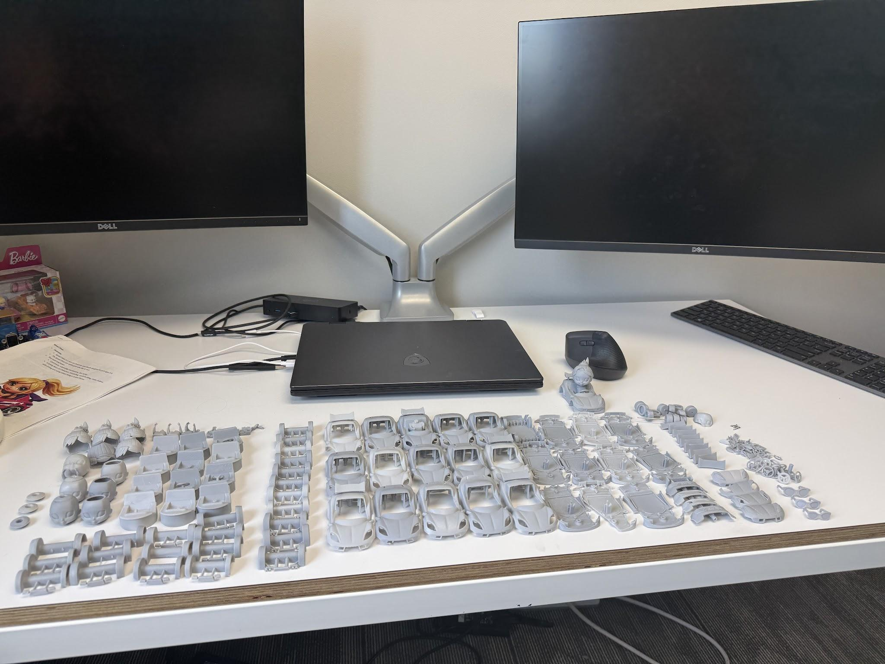
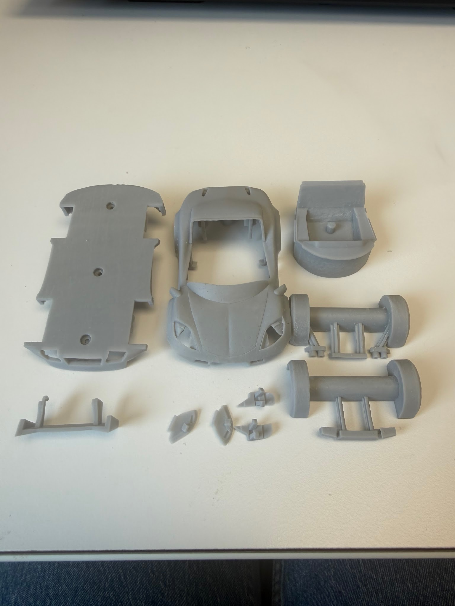
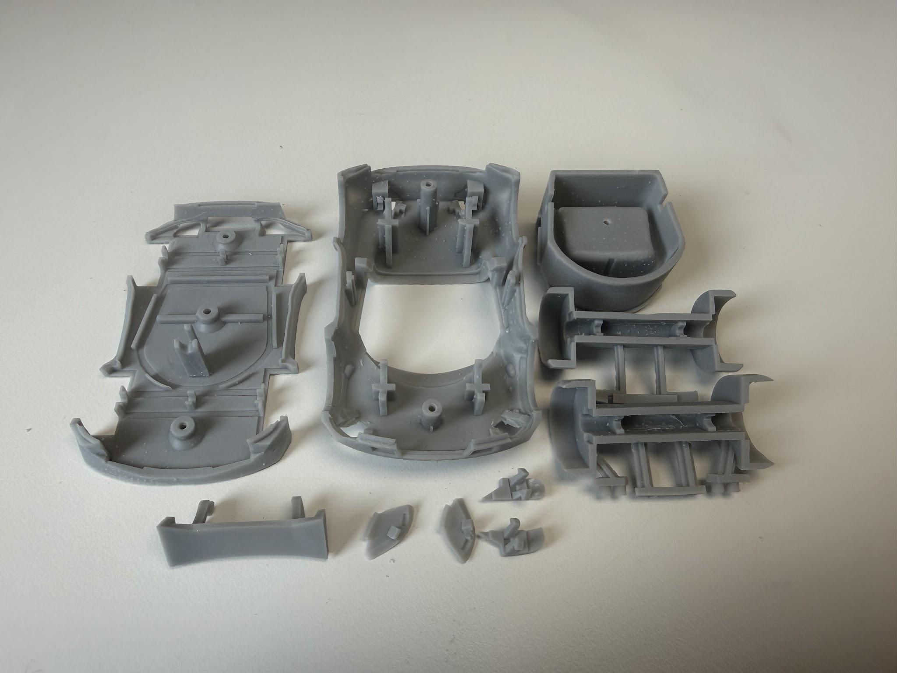
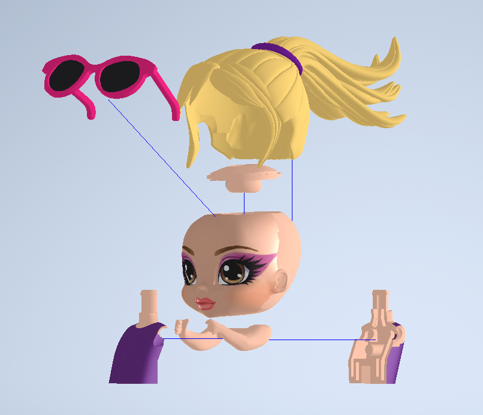
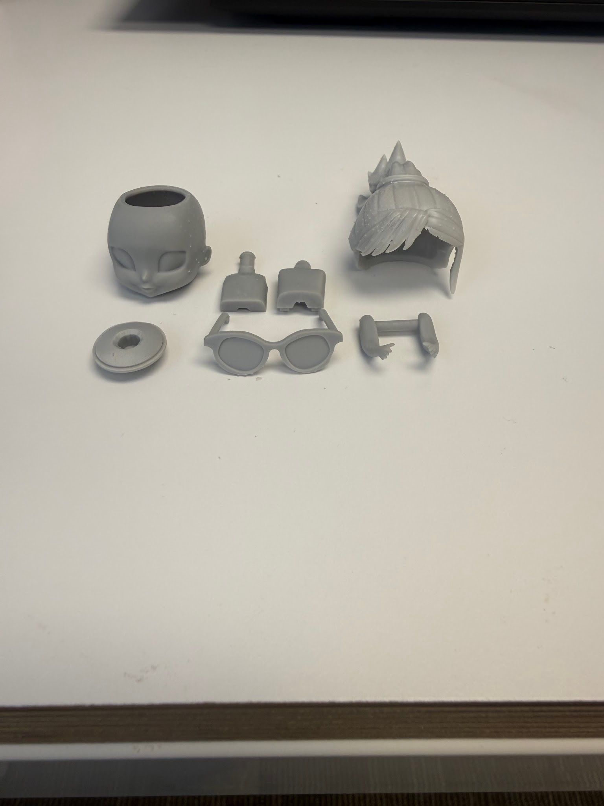
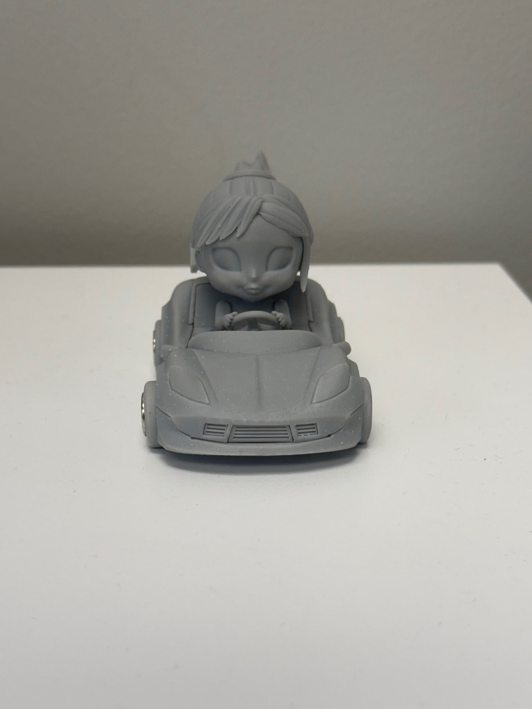

Summer Engineering Intern

At Upper Story, I took an initial concept model and worked through the full design iteration process for a toy car assembly. My work included cleaning up rough geometry, refining proportions, improving part interfaces, and creating a more manufacturable set of components that could be assembled reliably. The final CAD model represents the result of those refinements: a stylized, production-minded design with separate body, chassis, and character elements that fit together as a cohesive product.

Initial Rhino concept model used as the starting point for the toy car body and styling.

Exploded CAD assembly showing the body, chassis, and separate components in the final concept layout.

Print iterations used to evaluate fit, geometry, and assembly behavior as the design was refined.

Physical printed components used to inspect part quality, dimensional fit, and the assembly sequence.

Bottom-side component layout used to confirm spacing, support surfaces, and printability across the assembly.

Character breakdown showing the head, hair, and accessory elements that were refined for the final product build.

Separate body sections and molded parts used to validate the final assembly approach and component breakdown.

Final printed prototype used to evaluate the complete built form, fit, and visual quality of the assembled product.
The internship gave me hands-on experience in taking an early-stage concept and translating it into a refined, manufacturable product. I learned how much engineering work sits between an initial idea and a production-ready assembly: adjusting geometry, validating part fit, testing print iterations, and making design decisions that balance visual appeal with practical fabrication.
What made this project especially valuable was the emphasis on iteration. Each design pass improved the structure and function of the concept, from rough body geometry to the final multi-part build. This process strengthened my understanding of product development and gave me a clearer view of how creative design decisions become real, buildable engineering work.
Images shared with permission of Upper Story.